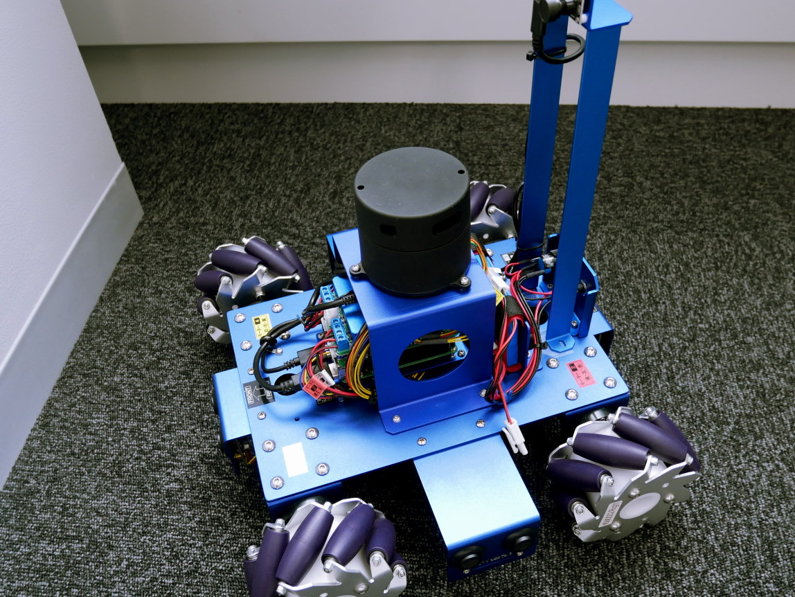
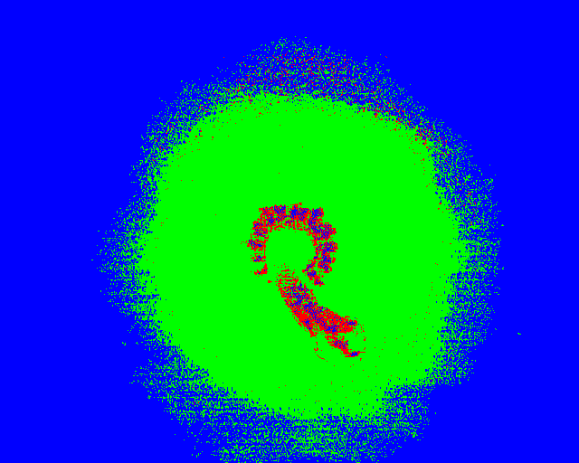
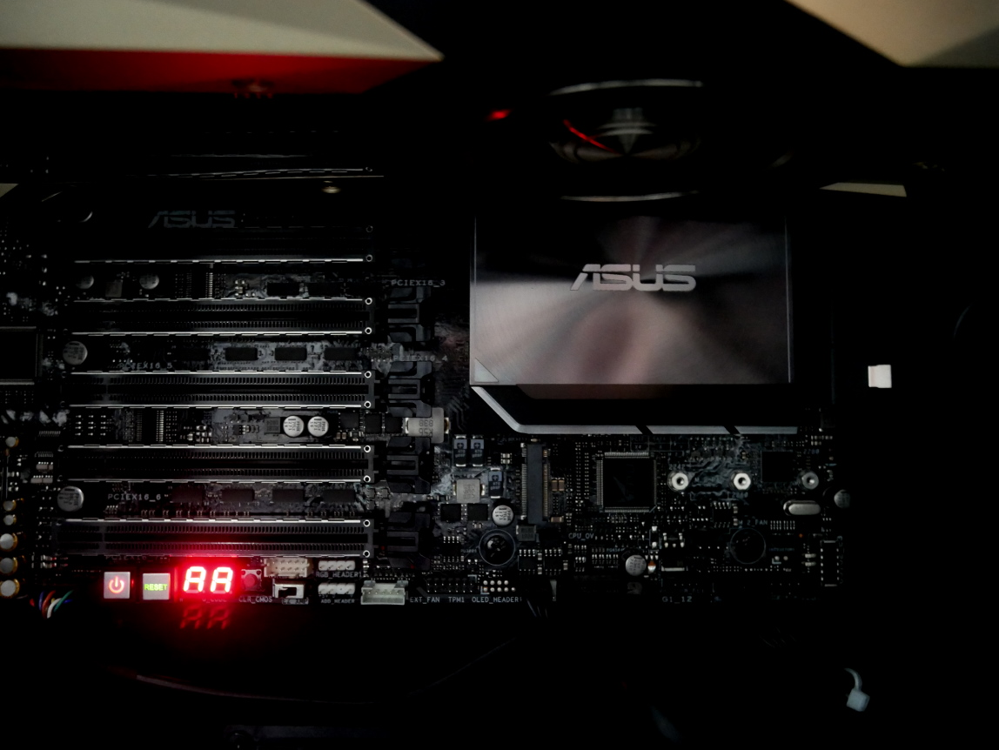

VPRL: Research
Research Topics 研究分野
Recognition & Understanding 認識と理解
画像に写る物や人の分類・検出などのコンピュータビジョンタスクは勿論，画像のみならず，音声や自然言語なども用いてロボットと人とのコミュニケーションの在り方を模索するマルチモーダルインタラクションに関する研究も進めています．

Hyperspectral Analysis ハイパースペクトル画像認識
一般的に広く用いられているRGB画像によるコンピュータービジョン技術では，実現困難であった様々な課題について，100バンド以上の可視光・非可視光情報を取得できるハイパースペクトル画像を利用した解決手法を検討，提案しています．

Augmented Vision 視覚拡張
他人の眼で自分を見てみたい，動物の眼で世界を見てみたい．擬似的な視覚拡張や視点変換を可能とするような画像表示技術に関する研究も進めています．超高精細ディスプレイの表示やVirtual Reality技術なども扱っています．
